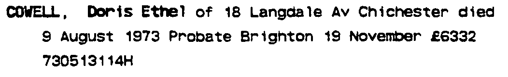
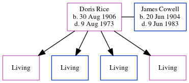

Doris Ethel Cowell (née Rice) 1906 - 1973
[ Home ] | [ Calendar ] | [ Surnames Index ] | [ Errors ] | [ Family History ]Doris Rice, the wife of James Henry Norman Cowell (the first cousin once-removed on the mother's side of Nigel Horne), was born in Felpham, Sussex, England on 30 Aug 19061,2,3 and. She married James (a coach station cleaner with whom she had 4 surviving children Eileen D, Desmond James, John N and Hazel Florence) in Westhampnett, West Sussex, England on 1 Jun 19265.
During her life, she was living at 3 Vicarage Cottages in Felpham on 2 Apr 19116; at Hampworth, Felpham Road, Bognor Regis, West Sussex on 29 Sept 19391; and at 18 Langdale Avenue, Chichester, Sussex, England in 1973.
She died on 9 Aug 1973 in Chichester4.
Citations
- 1939 Register - Findmypast (was recorded at this address)
- England & Wales births 1837-2006 - Findmypast
- England & Wales deaths 1837-2007 - Findmypast
- England & Wales Government Probate Death Index 1858-2019 - Findmypast
- England & Wales, Marriage Index: 1916-2005 Online publication - Provo, UT, USA: The Generations Network, Inc., 2009.Original data - General Register Office. England and Wales Civil Registration Indexes. London, England: General Register Office. © Crown copyright. Published by permission of the Cont
- 1911 Census for England & Wales - Findmypast (was age 4 and the daughter of the head of the household)
Media
Doris Rice - probate

1939 Register Image - TNA-R39-2576-2576A-009
England & Wales births 1837-2006 - BMD/B/1906/3/AZ/000501/075
England & Wales deaths 1837-2007 - BMD/D/1973/3/AZ/000224/066
England & Wales marriages 1837-2008 - BMD/M/1926/2/AZ/000983/146
1911 Census for England & Wales - GBC/1911/RG14/05365/0041/3
1939 Register Transcription - TNA-R39-2576-2576A-009-38
England & Wales Government Probate Death Index 1858-2019 - GBOR/GOVPROBATE/C/1973-1973/00051704
Family Tree
Map
Generated by ged2site. Last updated on Jul 3, 2024
Known Issues
Residence record for 1973 contains no citation
Listed in the residence for 1973, but spouse James Cowell is not
No records of living with anyone